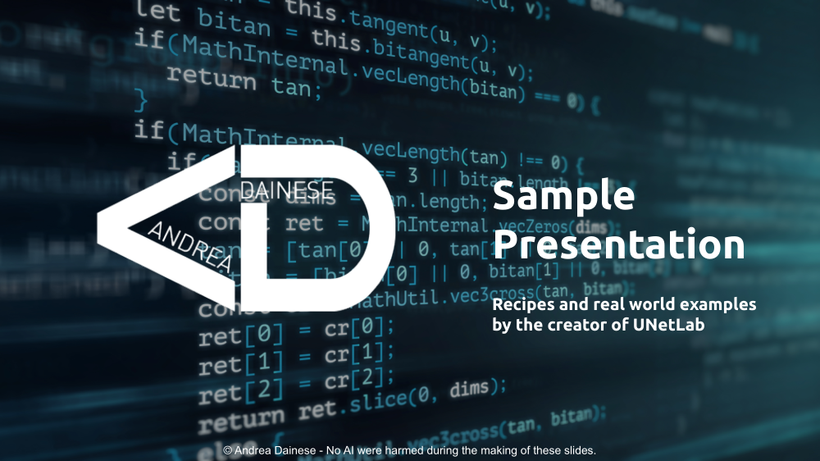

Writing presentations with Markdown¶

Previously, we discussed improving documentation management by focusing on content rather than tools. Specifically, we explored how high-quality documents can be generated using Markdown, CSS, and WeasyPrint.
When it comes to documents, optimization is not just about streamlining content writing but also about automating parts of the process. Many business reports, for instance, can be automatically generated, requiring analysts only to provide data commentary.
For my personal productivity, I faced a similar challenge: improving slide creation in the same way.
Microsoft PowerPoint¶
My experience with PowerPoint has been largely negative, and I see that many share this sentiment. While it theoretically supports master templates and offers a wide range of features, practical use reveals significant issues. Transferring content between presentations with different formats becomes an error-prone process, making it difficult to maintain consistent styling.
In enterprise environments, it is common to encounter presentations with mismatched and outdated styles. Centralizing templates at the organizational level is virtually impossible.
Google Slides¶
Google Slides impressed me with its simplicity. Its essential feature set is sufficient for my needs, allowing for clean presentations with consistent styles. Moving content between different presentations is also relatively easy.
However...
From a strategic perspective, I am moving towards a cloud-exit approach. Google uses a proprietary format that is only fully functional within its ecosystem. While I can export presentations in other formats, this reintroduces the very same issues I sought to avoid.
Slides as Code¶
Several tools allow slide creation using Markdown, including:
Many of these are built on Node.js, which I am not familiar with. Additionally, some lack features essential to my workflow. I also wanted to avoid reliance on a framework that I could not fully control.
Thus, I returned to the approach I had already developed for document generation: Markdown, CSS, and WeasyPrint.
Styling Considerations¶
Documents typically follow a structured format (unless designing highly customized brochures). CSS, especially as implemented in WeasyPrint, offers a high degree of customization, though it is not a perfect solution. Laying out a webpage on a screen differs significantly from typesetting a PDF document.
The compromises necessary for document formatting were largely acceptable. However, designing a presentation is an entirely different challenge, as slides are inherently more artistic.
That said, my presentations are usually technical, with a simple layout comprising text and images. For my use case, efficiency in structuring slides outweighs the need for pixel-perfect element positioning.
Defining the Presentation Structure¶
Similar to my document generation workflow, I used YAML to define the core parameters of each presentation:
title: Sample Presentation
subtitile: Recipes and real world examples by the creator of UNetLab
version: 1
language: en
logo: main
logos:
main: ../templates/slides/images/logo-ad.png
small: ../templates/slides/images/logo-ad-small.png
footer: © Andrea Dainese - No AI were harmed during the making of these slides.
This structure allows me to associate different logos with different layouts. A dictionary is used to store logo options, with a primary logo set as the default.
Each slide includes metadata that specifies the layout and associated logo:
---
layout: title
logo: main
---
# Sample Presentation
## Recipes and real world examples by the creator of UNetLab
The slide content itself is written in Markdown.
While Markdown has limitations (many of which are actually its strengths) I needed flexibility. To address this, I incorporated HTML support:
---
layout: main
logo: small
---
# #WhoAmI
## Andrea Dainese
- Senior Network & Security Architect with 20+ years’ experience in securing complex IT and OT infrastructures
- Focused on cyber security strategies, GDPR/ISO 27001 compliance and Automation
- Cisco (CCIE), VMware, Red Hat... certified
- Father of [Unified Networking Lab (UNetLab)](https://www.adainese.it/blog/2019/01/01/unified-networking-lab-unetlab-the-story/)
- Privacy and digital security evangelist
[https://adainese.it](https://adainese.it)
{: .right}
In this example, I use the attr_list extension to assign a .right class, aligning my website link to the right. Additionally, key links are displayed using FontAwesome icons directly embedded in HTML.
This approach fully met my requirements, enabling me to store presentations as Markdown in a Git repository and render them into PDFs using a simple script that I completely control.
Any style updates are instantly reflected across all presentations.
Template Processing¶
The script reads individual slides (one per file) and compiles them into a single HTML file using a Jinja template:
<body>
{% for slide in slides %}
<section id="{{ slide.id }}" class="slide {{ slide.meta.layout }}-slide">
<div class="content">
{% if slide.logo %}<div class="logo"><img src="{{ slide.logo }}" /></div>{% endif %}
{{ slide.content | safe }}
</div>
{% if footer %}<div class="footer">{{ footer }}</div>{% endif %}
<div class="page_counter">{{ loop.index }} / {{ slides | length }}</div>
</section>
{% endfor %}
</body>
</html>
Each slide is wrapped in a <section> element, with an optional footer and slide number.
The CSS styles are linked based on metadata defined in each slide file.
Generating the PDF¶
To compile the final presentation, we combine Markdown content, the Jinja template, stylesheets, and fonts into a single PDF.
Read each Markdown file and store the content:
md = markdown.Markdown(
extensions=[
"markdown.extensions.meta",
"markdown.extensions.fenced_code",
"markdown.extensions.codehilite",
"markdown.extensions.footnotes",
"markdown.extensions.tables",
"markdown.extensions.attr_list",
"markdown.extensions.md_in_html",
"markdown_captions",
"pymdownx.tilde",
"pymdownx.caret",
]
)
slide_body = md.convert(md_document)
slide_meta = md.Meta
Use Jinja to generate the HTML presentation:
html_document = template.render(
language=language,
title=title,
subtitle=subtitle,
slides=slides,
stylesheets=stylesheets,
footer=footer,
)
with open("presentation.html", "w") as fh:
fh.write(html_document)
Render the final PDF using WeasyPrint:
weasyprint.HTML("presentation.html").write_pdf(
"../Sample Presentation.pdf",
stylesheets=stylesheets,
font_config=font_config,
presentational_hints=True,
)
The output is visually indistinguishable from a PowerPoint-generated PDF, but with the advantages of version control, automation, and full styling control. By leveraging a simple, scriptable workflow, I have significantly streamlined my slide creation process while maintaining flexibility and consistency.

CI/CD¶
Once the publishing process is automated, we can integrate it into a CI/CD pipeline where, with each change/commit, a series of checks are triggered, followed by the publication.
In a business context, the pipeline could, for example:
- require confirmation/validation from a third party,
- notify stakeholders of a new version of a document,
- automatically highlight differences compared to the previous version.
For my personal content, my pipeline includes:
- checking the structure, integrity, and compliance of the YAML files I use to describe each book,
- checking the structure, integrity, and compliance of the style sheets (CSS),
- checking the structure, integrity, and compliance of each Markdown file,
- checking the spelling in each Markdown file.
These four steps are checked before every commit using pre-commit, and they’re also verified server-side after the push, via the CI pipeline.
The script is available in the GitHub repository.